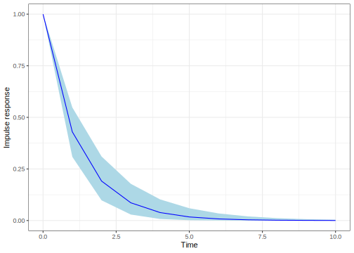
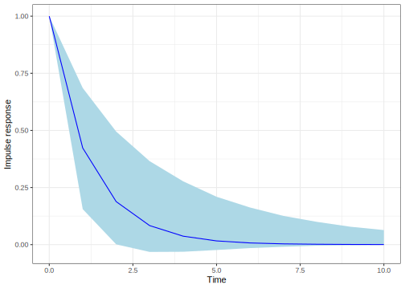

8.4 Vector Autoregressive models
Another widely used methodological approach in time series analysis is the vector autoregressive (VAR) model, which extends AR(p) models to the multivariate case. Since the seminal work by Sims (1980) (Sims 1980), these models have become a cornerstone of macroeconomic research to perform forecasts, and impulse-response (structural) analysis. This chapter provides an introduction to Bayesian inference in VAR models, with detailed discussions available in G. Koop, Korobilis, et al. (2010), Del Negro and Schorfheide (2011), Woźniak (2016), and Chan et al. (2019).
The reduced-form VAR(p) model can be written as \[\begin{align} \boldsymbol{y}_t=\boldsymbol{v} + \sum_{j=1}^p\boldsymbol{A}_{j}\boldsymbol{y}_{t-j}+\boldsymbol{\mu}_t, \tag{8.10} \end{align}\] where \(\boldsymbol{y}_t\) is a \(M\)-dimensional vector having information of \(M\) time series variables, \(\boldsymbol{v}\) is a \(M\)-dimensional vector of intercepts, \(\boldsymbol{A}_{j}\) are \(M\times M\) matrices of coefficients, and \(\boldsymbol{\mu}_t \stackrel{iid}{\sim} N_M(\boldsymbol{0}, \boldsymbol{\Sigma})\) are stochastic errors, \(t=1,2,\dots,T\) and \(j=1,2,\dots,p\). Other deterministic terms and exogenous variables can be added to the specification without main difficulty, we do not do this to keep simply the notation. In addition, we assume that the stability condition is satisfied such that the stochastic process is stationary (see Helmut (2005) Chap. 2 for details), and we have available \(p\) presample values for each variable.
Following the matrix-form notation of the multivariate regression model (see sections 3.4 and 7.1), we can set \(\boldsymbol{Y}=\left[{\boldsymbol{y_{1}}} \ {\boldsymbol{y_{2}}} \ \ldots \ {\boldsymbol{y_{M}}}\right]\), which is an \(T \times M\) matrix, \(\boldsymbol{x}_t=[1 \ \boldsymbol{y}_{t-1}^{\top} \ \dots \ \boldsymbol{y}_{t-p}^{\top}]\) is a \((1+Mp)\)-dimensional row vector, we define \(k=1+Mp\) to facilitate notation, and set \[\begin{align*} \boldsymbol{X}=\begin{bmatrix} \boldsymbol{x}_1\\ \boldsymbol{x}_2\\ \vdots \\ \boldsymbol{x}_T\\ \end{bmatrix}, \end{align*}\] which is a \(T\times k\) matrix, \(\boldsymbol{B}=\left[\boldsymbol{v} \ \boldsymbol{A}_{1} \ \boldsymbol{A}_{2} \ldots \boldsymbol{A}_{P}\right]^{\top}\) is a \(k \times M\) matrix of parameters, and \(\boldsymbol{U}=\left[\boldsymbol{\mu}_{1} \ \boldsymbol{\mu}_{2}\ldots \boldsymbol{\mu}_{M}\right]\) is a \(T\times M\)-dimensional matrix of stochastic random errors such that \(\boldsymbol{U}\sim N_{T\times M}(\boldsymbol{0}_{T\times M},\boldsymbol{\Sigma}\otimes \boldsymbol{I}_T)\). Thus, we can express the VAR(p) model in the form of a multivariate regression model, \[\begin{align*} \boldsymbol{Y}=\boldsymbol{X}\boldsymbol{B}+\boldsymbol{U}. \end{align*}\] We can assume conjugate priors to facilitate computation, that is, \[ \pi({\boldsymbol{B}}, {\boldsymbol{\Sigma}}) = \pi({\boldsymbol{B}} \mid {\boldsymbol{\Sigma}}) \pi({\boldsymbol{\Sigma}}), \] where \({\boldsymbol{B}} \mid {\boldsymbol{\Sigma}} \sim N_{k \times M}({\boldsymbol{B}}_{0}, {\boldsymbol{V}}_{0}, {\boldsymbol{\Sigma}})\) and \({\boldsymbol{\Sigma}} \sim IW({\boldsymbol{\Psi}}_{0}, \alpha_{0})\). Thus, \[ \pi({\boldsymbol{B}}, {\boldsymbol{\Sigma}} \mid {\boldsymbol{Y}}, {\boldsymbol{X}}) = \pi({\boldsymbol{B}} \mid {\boldsymbol{\Sigma}}, {\boldsymbol{Y}}, {\boldsymbol{X}}) \pi({\boldsymbol{\Sigma}} \mid {\boldsymbol{Y}}, {\boldsymbol{X}}), \] where \({\boldsymbol{B}} \mid {\boldsymbol{\Sigma}}, {\boldsymbol{Y}}, {\boldsymbol{X}} \sim N_{k \times M}({\boldsymbol{B}}_n, {\boldsymbol{V}}_n, {\boldsymbol{\Sigma}})\) and \({\boldsymbol{\Sigma}} \mid {\boldsymbol{Y}}, {\boldsymbol{X}} \sim IW({\boldsymbol{\Psi}}_n, \alpha_n)\). The quantities \({\boldsymbol{B}}_n\), \({\boldsymbol{V}}_n\), \({\boldsymbol{\Psi}}_n\), and \(\alpha_n\) are given by the following expressions:
\[ {\boldsymbol{B}}_n = ({\boldsymbol{V}}_{0}^{-1} + {\boldsymbol{X}}^{\top}{\boldsymbol{X}})^{-1}({\boldsymbol{V}}_{0}^{-1}{\boldsymbol{B}}_{0} + {\boldsymbol{X}}^{\top}{\boldsymbol{X}} \widehat{\boldsymbol{B}}), \] \[ {\boldsymbol{V}}_n = ({\boldsymbol{V}}_{0}^{-1} + {\boldsymbol{X}}^{\top}{\boldsymbol{X}})^{-1}, \] \[ {\boldsymbol{\Psi}}_n = {\boldsymbol{\Psi}}_{0} + {\boldsymbol{S}} + {\boldsymbol{B}}_{0}^{\top}{\boldsymbol{V}}_{0}^{-1}{\boldsymbol{B}}_{0} + \widehat{\boldsymbol{B}}^{\top}{\boldsymbol{X}}^{\top}{\boldsymbol{X}} \widehat{\boldsymbol{B}} - {\boldsymbol{B}}_n^{\top} {\boldsymbol{V}}_n^{-1} {\boldsymbol{B}}_n, \] \[ {\boldsymbol{S}} = ({\boldsymbol{Y}} - {\boldsymbol{X}} \widehat{\boldsymbol{B}})^{\top}({\boldsymbol{Y}} - {\boldsymbol{X}} \widehat{\boldsymbol{B}}), \] \[ \widehat{\boldsymbol{B}} = ({\boldsymbol{X}}^{\top}{\boldsymbol{X}})^{-1}{\boldsymbol{X}}^{\top}{\boldsymbol{Y}}, \] and \[ \alpha_n = T + \alpha_0. \]
Thus, we see that once we express a VAR(p) model in the correct form, we can perform Bayesian inference as we did in the multivariate regression model. However, assuming conjugate priors has some limitations. First, VAR(p) models have many parameters. For instance, with 4 lags and 6 variables, we would have 150 location parameters (\((1 + (6 \times 4)) \times 6\)) and 21 scale parameters (\(6 \times (6 + 1)/2\)) for the covariance matrix. This can lead to a loss of precision, especially when using macroeconomic data, due to the typical lack of large sample sizes. Therefore, it is desirable to impose prior restrictions on the model specification, which cannot be achieved using conjugate priors.
Second, natural conjugate priors do not allow for flexible extensions, such as having different regressors in different equations. Third, the prior structure implies that the prior covariance of the coefficients in any two equations must be proportional to each other. This is because the prior covariance form is \(\boldsymbol{\Sigma} \otimes \boldsymbol{V}_0\). However, this does not always make sense in certain applications. For example, imposing zero prior restrictions on some coefficients would imply that the prior variance of these coefficients should be near zero, but this does not need to be true for all coefficients in the model.
To address the first issue, we can think of the VAR(p) specification in a similar way to the seemingly unrelated regression (SUR) model, where we have different regressors in different equations and account for unobserved dependence. This approach allows us to impose zero restrictions on the VAR(p) model, thereby improving its parsimony. Following the setup in Section 7.2, we have \[ \boldsymbol{y}_{m} = \boldsymbol{Z}_{m} \boldsymbol{\beta}_m + \boldsymbol{\mu}_m, \] where \(\boldsymbol{y}_m\) is a \(T\)-dimensional vector corresponding to the \(m\)-th time series variable, \(\boldsymbol{Z}_m\) is a \(T \times K_m\) matrix of regressors, \(\boldsymbol{\beta}_m\) is a \(K_m\)-dimensional vector of location parameters, and \(\boldsymbol{\mu}_m\) is a \(T\)-dimensional vector of stochastic errors, for \(m = 1, 2, \dots, M\).
Stacking the \(M\) equations, we can write \(\boldsymbol{y}=\boldsymbol{Z}\boldsymbol{\beta}+\boldsymbol{\mu}\) where \(\boldsymbol{y}=\left[\boldsymbol{y}_{1}^{\top} \ \boldsymbol{y}_{2}^{\top} \dots \boldsymbol{y}_{M}^{\top}\right]^{\top}\) is a \(MT\)-dimensional vector, \(\boldsymbol{\beta}=\left[\boldsymbol{\beta}_{1}^{\top} \ \boldsymbol{\beta}_{2}^{\top} \ldots \boldsymbol{\beta}_{M}^{\top}\right]^{\top}\) is a \(K\) dimensional vector, \(K=\sum_{m=1}^{M} K_m\), note that having the same number of regressors implies \(K = M \cdot k\) coefficients, \(\boldsymbol{Z}\) is an \(MT\times K\) block diagonal matrix composed of \(\boldsymbol{Z}_{m}\), that is, \[\begin{align*} \boldsymbol{Z}&=\begin{bmatrix} \boldsymbol{Z}_1 & \boldsymbol{0} & \dots & \boldsymbol{0}\\ \boldsymbol{0} & \boldsymbol{Z}_2 & \dots & \boldsymbol{0}\\ \vdots & \vdots & \ddots & \vdots\\ \boldsymbol{0} & \boldsymbol{0} & \dots & \boldsymbol{Z}_M \end{bmatrix}, \end{align*}\] and \(\boldsymbol{\mu}=\left[\boldsymbol{\mu}_{1}^{\top} \ \boldsymbol{\mu}_{2}^{\top} \dots \ \boldsymbol{\mu}_{M}^{\top}\right]^{\top}\) is a \(MT\)-dimensional vector of stochastic errors such that \(\boldsymbol{\mu}\sim{N}(\boldsymbol{0},\boldsymbol{\Sigma}\otimes \boldsymbol{I}_T)\).
We can use independent priors in this model to overcome the limitations of the conjugate prior, that is, \(\pi(\boldsymbol{\beta})\sim{N}(\boldsymbol{\beta}_0,\boldsymbol{B}_0)\) and \(\pi(\boldsymbol{\Sigma}^{-1})\sim{W}(\alpha_0,\boldsymbol{\Psi}_0)\). Thus, we know from Section 7.2 that the posterior distributions are \[\begin{equation*} \boldsymbol{\beta}\mid \boldsymbol{\Sigma}, \boldsymbol{y}, \boldsymbol{Z} \sim {N}(\boldsymbol{\beta}_n, \boldsymbol{B}_n), \end{equation*}\] \[\begin{equation*} \boldsymbol{\Sigma}^{-1}\mid \boldsymbol{\beta}, \boldsymbol{y}, \boldsymbol{Z} \sim {W}(\alpha_n, \boldsymbol{\Psi}_n), \end{equation*}\]
where \(\boldsymbol{B}_n=(\boldsymbol{Z}^{\top}(\boldsymbol{\Sigma}^{-1}\otimes \boldsymbol{I}_T )\boldsymbol{Z}+\boldsymbol{B}_0^{-1})^{-1}\), \(\boldsymbol{\beta}_n=\boldsymbol{B}_n(\boldsymbol{B}_0^{-1}\boldsymbol{\beta}_0 + \boldsymbol{Z}^{\top}(\boldsymbol{\Sigma}^{-1}\otimes \boldsymbol{I}_T)\boldsymbol{y})\), \(\alpha_n = \alpha_0 + T\) and \(\boldsymbol{\Psi}_n = (\boldsymbol{\Psi}_0^{-1} + \boldsymbol{U}^{\top}\boldsymbol{U})^{-1}\), where \(\boldsymbol{U}\) is an \(T\times M\) matrix whose columns are \(\boldsymbol{y}_m-\boldsymbol{Z}_m\boldsymbol{\beta}_m\).3
Observe that we have standard conditional posteriors, thus, we can employ a Gibbs sampling algorithm to get the posterior draws. We can calculate the prediction \(\boldsymbol{y}_{T+1}=[y_{1T+1} \ y_{2T+1} \ \dots \ y_{MT+1}]^{\top}\) knowing that \(\boldsymbol{y}_{T+1}\sim N(\boldsymbol{Z}_{T}\boldsymbol{\beta},\boldsymbol{\Sigma})\), where \[\begin{align*} \boldsymbol{Z}_T&=\begin{bmatrix} \boldsymbol{z}_{1T}^{\top} & 0 & \dots & 0\\ 0 & \boldsymbol{z}_{2T}^{\top} & \dots & 0\\ \vdots & \vdots & \ddots & \vdots\\ 0 & 0& \dots & \boldsymbol{z}_{MT}^{\top} \end{bmatrix}, \end{align*}\] and using the posterior draws of \(\boldsymbol{\beta}^{(s)}\) and \(\boldsymbol{\Sigma}^{(s)}\), \(s=1,2,\dots,S\). We can also perform inference of functions of the parameters that are of main interest when using VAR models.
Note that independent priors offer more flexibility regarding prior information. For instance, we can set \(\boldsymbol{\Psi}_0 = \boldsymbol{S}^{-1}\), \(\alpha_0 = T\), \(\boldsymbol{\beta}_0 = \boldsymbol{0}\), and \(\boldsymbol{B}_0\) as a diagonal matrix, where the variance of the components associated with the coefficients in the \(m\)-th equation is such that the prior variance of the coefficients for the own lags is \(a_1/l^2\), the variances for lag \(l\) of variable \(m \neq j\) are \(a_2s_{m}^2/(l^2 s_{j}^2)\), and the variance of the intercepts is set to \(a_3 s_{m}^2\), with \(l = 1, 2, \dots, p\), where \(s_m\) is the estimated standard error of the residuals from an unrestricted univariate autoregression of variable \(m\) against a constant and its \(p\) lags (Litterman 1986; G. Koop, Korobilis, et al. 2010).
Note that setting \(a_1 > a_2\) implies that own lags are more important as predictors than lags of other variables, and dividing by \(l^2\) implies that more recent lags are more relevant than those further in the past. The specific choices of \(a_1\), \(a_2\), and \(a_3\) (\(a_k > 0\), \(k = 1, 2, 3\)) depend on the specific application, but it is generally easier to elicit these parameters rather than the \(K(K+1)/2\) different components of \(\boldsymbol{B}_0\).4
This setting is known as the Minnesota prior, as it is based on the seminal proposals for Bayesian VAR models by researchers at the University of Minnesota and the Federal Reserve Bank of Minneapolis (Doan, Litterman, and Sims 1984; Litterman 1986).5
An important non-linear function of parameters when performing VAR analysis is the impulse response function, which is, the response of one variable to an impulse in another variable in the model. The impulse response function can be deduced using the \(MA\) representation of the VAR model. In particular, we can write Equation (8.10) using the lag operator (see Section 8.2), \[\begin{align} \boldsymbol{y}_t=\boldsymbol{v} + (\boldsymbol{A}_{1}L+\boldsymbol{A}_{2}L^2+\dots+\boldsymbol{A}_{p}L^p)\boldsymbol{y}_t+\boldsymbol{\mu}_t, \tag{8.11} \end{align}\] thus \(\boldsymbol{A}(L)\boldsymbol{y}_t=\boldsymbol{v}+\boldsymbol{\mu}_t\), where \(\boldsymbol{A}(L)=\boldsymbol{I}_M-\boldsymbol{A}_{1}L-\boldsymbol{A}_{2}L^2-\dots-\boldsymbol{A}_{p}L^p\). Let \(\boldsymbol{\Phi}(L):= \sum_{s=0}^{\infty}\boldsymbol{\Phi}_sL^s\) an operator such that \(\boldsymbol{\Phi}(L)\boldsymbol{A}(L)=\boldsymbol{I}_M\). Thus, we have that \(\boldsymbol{\Phi}(L)\boldsymbol{A}(L)\boldsymbol{y}_t=\left(\sum_{s=0}^{\infty}\boldsymbol{\Phi}_sL^s\right)\boldsymbol{v}+\left(\sum_{s=0}^{\infty}\boldsymbol{\Phi}_sL^s\right)\boldsymbol{\mu}_{t}=\boldsymbol{\mu}+\sum_{s=0}^{\infty}\boldsymbol{\Phi}_s\boldsymbol{\mu}_{t-s}\). Note that \(L^s\boldsymbol{v}=\boldsymbol{v}\) because \(\boldsymbol{v}\) is constant, thus we set \(\sum_{s=0}^{\infty}\boldsymbol{\Phi}_sL^s\boldsymbol{v}=\sum_{s=0}^{\infty}\boldsymbol{\Phi}_s\boldsymbol{v}=\boldsymbol{\Phi}(1)\boldsymbol{v}=(\boldsymbol{I}_M-\boldsymbol{A}_{1}-\boldsymbol{A}_{2}-\dots-\boldsymbol{A}_{p})^{-1}\boldsymbol{v}:=\boldsymbol{\mu}\), which is the mean of the process (Helmut 2005). Therefore, the MA representation of the VAR is \[\begin{align} \boldsymbol{y}_t=\boldsymbol{\mu} + \sum_{s=0}^{\infty}\boldsymbol{\Phi}_s\boldsymbol{\mu}_{t-s}, \tag{8.12} \end{align}\] where \(\boldsymbol{\Phi}_0=\boldsymbol{I}_M\), and we can get the coefficients in \(\boldsymbol{\Phi}_s\) by the recursion \(\boldsymbol{\Phi}_s=\sum_{l=1}^s\boldsymbol{\Phi}_{s-l}\boldsymbol{A}_l\), \(\boldsymbol{A}_l=\boldsymbol{0}\), \(l>p\) and \(s=1,2,..\) (Helmut 2005). This impulse response function is called forecast error impulse response function.
The MA coefficients contain the impulse responses of the system. In particular, \(\phi_{mj,s}\), which is the \(mj\)-th element of the matrix \(\boldsymbol{\Phi}_s\), represents the response of the \(m\)-th variable to a unit shock of the variable \(j\) in the system, \(s\) periods ago, provided that the effect is not contaminated by other shocks in the system. The long-term effects (total multipliers) are given by \(\boldsymbol{\Psi}_{\infty}:=\sum_{s=1}^{\infty}\boldsymbol{\Phi}_s=(\boldsymbol{I}_M-\boldsymbol{A}_{1}-\boldsymbol{A}_{2}-\dots-\boldsymbol{A}_{p})^{-1}\).
An assumption in these impulse response functions is that a shock occurs in only one variable at a time. This can be questionable as different shocks may be correlated, consequently, occurring simultaneously. Thus, the impulse response analysis can be performed based on the alternative MA representation, \(\boldsymbol{y}_t=\boldsymbol{\mu} + \sum_{s=0}^{\infty}\boldsymbol{\Phi}_s\boldsymbol{P}\boldsymbol{P}^{-1}\boldsymbol{\mu}_{t-s}=\boldsymbol{\mu} + \sum_{s=0}^{\infty}\boldsymbol{\Theta}_s\boldsymbol{w}_{t-s}\), where \(\boldsymbol{\Theta}_s=\boldsymbol{\Phi}_s\boldsymbol{P}\) and \(\boldsymbol{w}_{t}=\boldsymbol{P}^{-1}\boldsymbol{\mu}_{t}\), \(\boldsymbol{P}\) is a lower triangular matrix such that \(\boldsymbol{\Sigma}=\boldsymbol{P}\boldsymbol{P}^{\top}\) (Cholesky factorization/decomposition). Note that the covariance matrix of \(\boldsymbol{w}_t\) is \(\boldsymbol{I}_M\) due to \(\mathbb{E}[\boldsymbol{w}_t\boldsymbol{w}_t^{\top}]=\mathbb{E}[\boldsymbol{P}^{-1}\boldsymbol{\mu}_{t}\boldsymbol{\mu}_t^{\top}(\boldsymbol{P}^{-1})^{\top}]=\boldsymbol{P}^{-1}\boldsymbol{\Sigma}(\boldsymbol{P}^{-1})^{\top}=\boldsymbol{P}^{-1}\boldsymbol{P}\boldsymbol{P}^{\top}(\boldsymbol{P}^{-1})^{\top}=\boldsymbol{I}_M\).
In this representation is sensible to assume that each shock occurs independently due to the covariance matrix of \(\boldsymbol{w}_t\) being an identity. In addition, a unit shock is a shock of size one standard deviation due the result of the covariance matrix. This is named the ortogonalized impulse response, where \(\theta_{mj,s}\), which is the \(mj\)-th element of the matrix \(\boldsymbol{\Theta}_s\), represents the response of the \(m\)-th variable to a standard deviation shock of the variable \(j\) in the system, \(s\) periods ago. The critical point with the ortogonalized impulse responses is that the order of the variables in the VAR is really important because implicitly establishes a recursive model, that is, the \(m\)-th equation in the system may contain \(y_{1t}, y_{2t}, \dots, y_{m-1t}\), but not \(y_{mt}, y_{m+1t}, \dots, y_{Mt}\) on the right-hand side of its equation. Thus, \(y_{mt}\) cannot have an instantaneous impact on \(y_{jt}\) for \(j<m\) (Helmut 2005).
Beyond the fascinating macroeconomic implications embedded in the specification of VAR models, the key point for this section is that we can infer impulse response functions using the posterior draws.
Example: US fiscal system
Let’s use the dataset provided by Woźniak (2024) of the US fiscal system, where ttr is the quarterly total tax revenue, gs is the quarterly total government spending, and gdp is the quarterly gross domestic product, all expressed in log, real, per person terms, and the period is 1948q1 to 2024q2. This dataset is the 18USAfiscal.csv file. Mertens and Ravn (2014) analyze the US fiscal policy shocks using these variables.
Let’s estimate a VAR model where \(\boldsymbol{y}_t=[\Delta(ttr_t) \ \Delta(gs_t) \ \Delta(gdp_t)]^{\top}\), that is, we work with the log differences (variation rates), and we set \(p=1\). We use the package bvartools to estimate the forecast error and ortogonalized impulse response functions. We use vague independent priors setting \(\boldsymbol{\beta}_0=\boldsymbol{0}\), \(\boldsymbol{B}_0=100\boldsymbol{I}\), \(\boldsymbol{V}_0=5^{-1}\boldsymbol{I}\) and \(\alpha_0=3\), and the Minnesota prior setting \(a_1=2\), \(\kappa_2=0.5\) and \(\kappa_3=5\) (default values).6
The following code shows how to do this, take into account that we use the first 301 observations to estimate the model, and keep the last 4 observations to check the forecasting performance. The first and second figures show the impulse response functions of gs with respect to gs, the forecast error impulse response using vague independent priors, and the orthogonalized impulse response using the Minnesota prior, respectively. We see that the effect of the Minnesota prior is to decrease uncertainty. In addition, the forecasting exercise results indicate that these assumptions have same effects in this example. In particular, the third Figure shows that the mean forecasts using the vague prior (green line) and the Minnesota prior (red line) are indistinguishable from the true observations (black line). However, the Minnesota prior enhances forecast precision, as its 95% predictive interval (blue shaded area) is narrower and fully contained within the 95% predictive interval obtained using vague priors (light blue shaded area). This improvement is attributable to the shrinkage properties of the Minnesota prior.
rm(list = ls()); set.seed(010101)
DataUSfilcal <- read.csv("https://raw.githubusercontent.com/besmarter/BSTApp/refs/heads/master/DataApp/18USAfiscal.csv", sep = ",", header = TRUE, quote = "")
attach(DataUSfilcal) # upload data
Y <- cbind(diff(as.matrix(DataUSfilcal[,-c(1:2)])))
T <- dim(Y)[1]-1; K <- dim(Y)[2]
Ynew <- Y[-c((T-2):(T+1)), ] # Use 4 last observations to check forecast
y1 <- Ynew[-1, 1]; y2 <- Ynew[-1, 2]; y3 <- Ynew[-1, 3]
X1 <- cbind(1, lag(Ynew)); X1 <- X1[-1,]
X2 <- cbind(1, lag(Ynew)); X2 <- X2[-1,]
X3 <- cbind(1, lag(Ynew)); X3 <- X3[-1,]
M <- dim(Y)[2]; K1 <- dim(X1)[2]; K2 <- dim(X2)[2]; K3 <- dim(X3)[2]
K <- K1 + K2 + K3
# Hyperparameters
b0 <- 0; c0 <- 100; V0 <- 5^(-1); a0 <- M
#Posterior draws
library(tibble)
MCMC <- 10000; burnin <- 1000; H <- 10; YnewPack <- ts(Ynew)
model <- bvartools::gen_var(YnewPack, p = 1, deterministic = "const", iterations = MCMC, burnin = burnin) # Create model
model <- bvartools::add_priors(model, coef = list(v_i = c0^-1, v_i_det = c0^-1, const = b0), sigma = list(df = a0, scale = V0/a0), coint_var = FALSE) # Add priors
object <- bvartools::draw_posterior(model) # Posterior draws## Estimating model...ir <- bvartools::irf.bvar(object, impulse = "gs", response = "gs", n.ahead = H, type = "feir", cumulative = FALSE) # Calculate IR
# Plot IR
plot_IR <- function(df) {
p <- ggplot(data = df, aes(x = t)) + geom_ribbon(aes(ymin = lower, ymax = upper), alpha = 1, fill = "lightblue") + geom_line(aes(y = mean), colour = "blue", linewidth = 0.5) + ylab("Impulse response") + xlab("Time") + xlim(0,H)
print(p)
}
dfNew <- tibble(t = 0:H, mean = as.numeric(ir[,2]), lower = as.numeric(ir[,1]), upper = as.numeric(ir[,3]))
FigNew <- plot_IR(dfNew)

# Using Minnesota prior
modelMin <- bvartools::gen_var(YnewPack, p = 1, deterministic = "const", iterations = MCMC, burnin = burnin)
modelMin <- bvartools::add_priors(modelMin, minnesota = list(kappa0 = 2, kappa1 = 0.5, kappa3 = 5), coint_var = FALSE) # Minnesota prior
objectMin <- bvartools::draw_posterior(modelMin) # Posterior draws## Estimating model...irMin <- bvartools::irf.bvar(objectMin, impulse = "gs", response = "gs", n.ahead = H, type = "feir", cumulative = FALSE) # Calculate IR
dfNewMin <- tibble(t = 0:H, mean = as.numeric(irMin[,2]), lower = as.numeric(irMin[,1]), upper = as.numeric(irMin[,3]))
FigNewMin <- plot_IR(dfNewMin)

### Forecasting
bvar_pred <- predict(object, n.ahead = 4, new_d = rep(1, 4))
bvar_predOR <- predict(objectMin, n.ahead = 4, new_d = rep(1, 4))
dfFore <- tibble(t = c((T-2):(T+1)), mean = as.numeric(bvar_pred[["fcst"]][["gs"]][,2]), lower = as.numeric(bvar_pred[["fcst"]][["gs"]][,1]), upper = as.numeric(bvar_pred[["fcst"]][["gs"]][,3]), mean1 = as.numeric(bvar_predOR[["fcst"]][["gs"]][,2]), lower1 = as.numeric(bvar_predOR[["fcst"]][["gs"]][,1]), upper1 = as.numeric(bvar_predOR[["fcst"]][["gs"]][,3]), true = as.numeric(Y[c((T-2):(T+1)),2]))
plot_FORE <- function(df) {
p <- ggplot(data = dfFore, aes(x = t)) + geom_ribbon(aes(ymin = lower1, ymax = upper1), alpha = 1, fill = "blue") + geom_ribbon(aes(ymin = lower, ymax = upper), alpha = 1, fill = "lightblue") + geom_line(aes(y = mean), colour = "green", linewidth = 0.5) + geom_line(aes(y = mean1), colour = "red", linewidth = 0.5) + geom_line(aes(y = true), colour = "black", linewidth = 0.5) + ylab("Forecast") + xlab("Time") + xlim(c((T-2),(T+1)))
print(p)
}
FigFore <- plot_FORE(dfFore)
The following Algorithm shows how to do perform inference in VAR models using our GUI. See also Chapter 5 for details regarding the dataset structure.
Algorithm: Vector Autoregressive Models
Select Time series Model on the top panel
Select VAR models using the left radio button
Upload the dataset selecting first if there is a header in the file, and the kind of separator in the csv file of the dataset (comma, semicolon, or tab). Then, use the Browse button under the Choose File legend
Select MCMC iterations, burn-in, and thinning parameters using the Range sliders
Set the number of lags (p)
Set the hyperparameters for the Minnesota prior: a1, κ2 and κ3. This step is not necessary as by default our GUI uses default values in the bvartools package
Select the type of impulse response functions: forecast error or orthogonalized, and ordinary or cumulative
Set the time horizon for the impulse response functions and the forecasts
Click the Go! button
Analyze results
Download impulse responses and forecasts using the Download Results button
There are other good packages in R to perform Bayesian inference in VAR models. For instance, bayesianVARs package implements inference of reduced-form VARs with stochastic volatility (Luis and Gregor 2024), BVAR package performs inference using hierarchical priors (Nikolas et al. 2022), bvarsv implements time-varying parameters models (Krueger 2022), bsvars performs estimation of structural VAR models (Woźniak 2024), and bsvarSIGNs to estimating structural VAR models with sign restrictions (Xiaolei and Woźniak 2024).
References
We can also use the alternative representation presented in Section 7.2.↩︎
In our GUI, we use the bvartools package, which adopts a slightly different notation such that \(a_2 = a_1 \kappa_2\) and \(a_3 = a_1 \kappa_3\). Thus, we need to set \(a_1\), \(\kappa_2\), and \(\kappa_3\).↩︎
In the case that the variables are not stationary, which is more likely when using variables in levels (e.g., gross domestic product), we set \(\boldsymbol{\beta}_0 = \boldsymbol{0}\), except for the elements associated with the first own lags of the dependent variables in each equation, where the prior mean is set to 1. Additionally, the original proposal of the Minnesota prior set \(\boldsymbol{\Sigma} = \boldsymbol{S}/T\), meaning it did not account for uncertainty regarding \(\boldsymbol{\Sigma}\).↩︎
The bvartools package uses the inverse Wishart distribution as prior for \(\boldsymbol{\Sigma}\), where the hyperparameters are the degrees of freedom of the error term, and the prior error variance of endogenous variables.↩︎